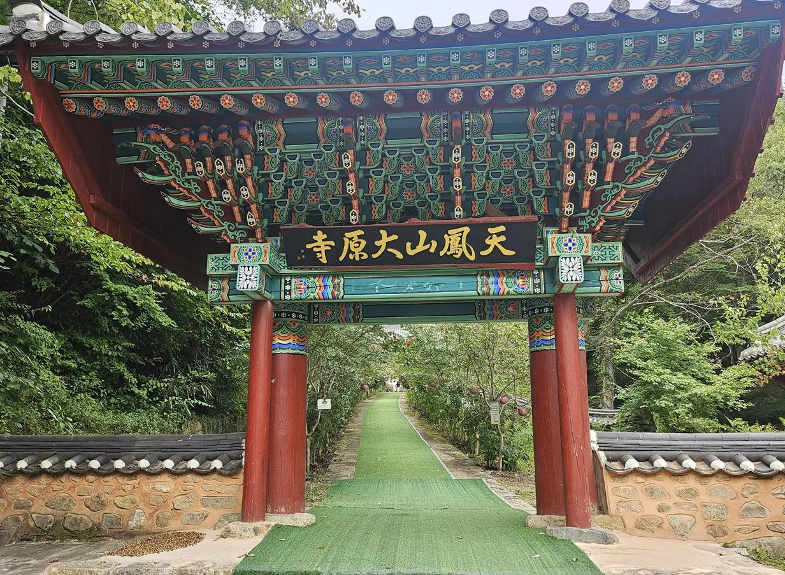
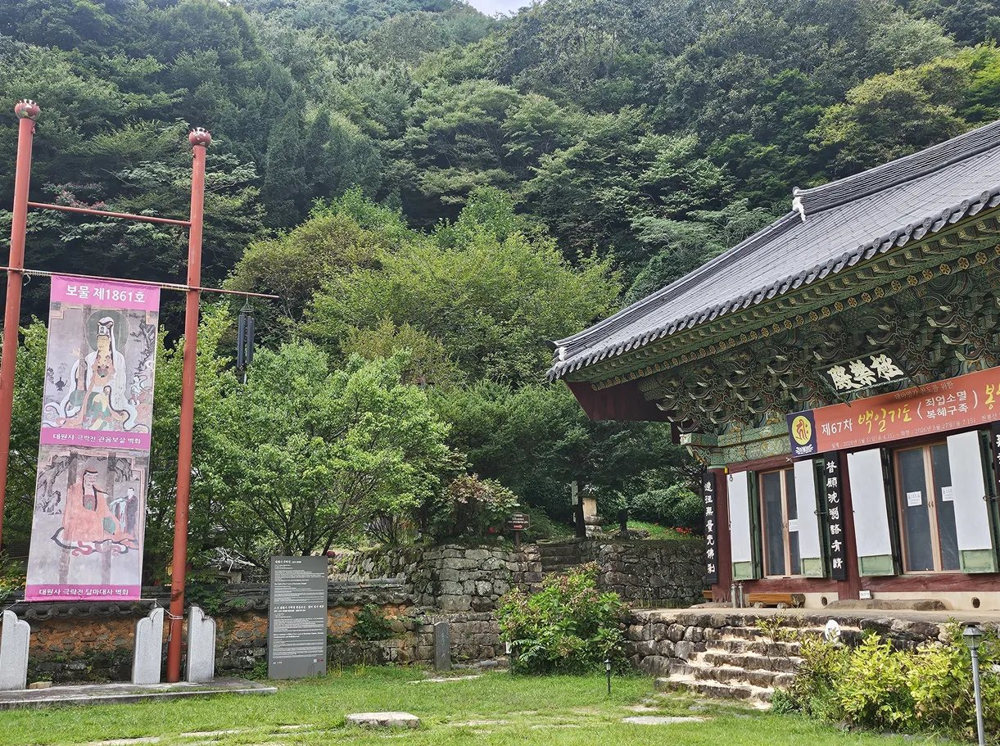
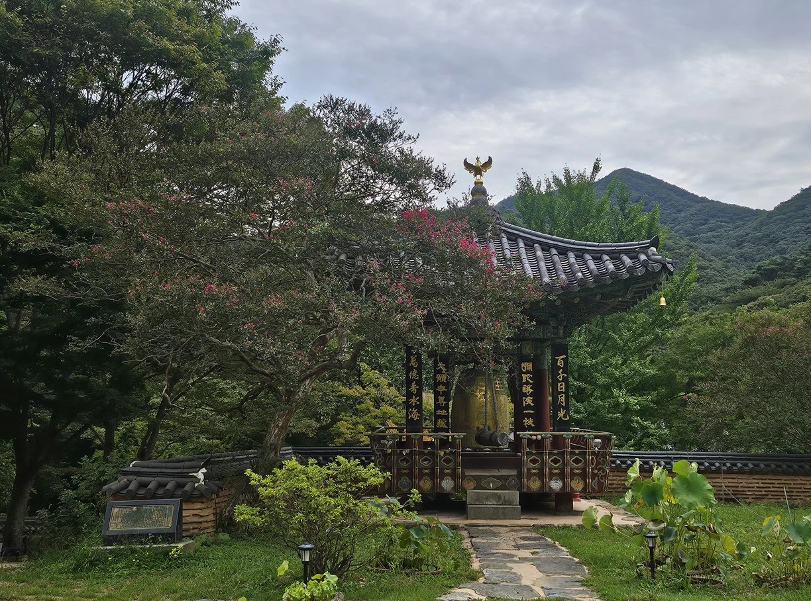

꽃길숲 이야기
천년고찰 대원사와 꽃길숲 수목장이 걸어온 이야기입니다.
주지스님 인사말
주지스님 인사말 원고
대원사의 역사
백제 무녕왕 3년(503년) 아도화상이 창건한 천년고찰입니다. 조선 영조 때(1766년) 지은 극락전은 1948년 화재 때 유일하게 화마를 피한 건물로, 전라남도 유형문화재입니다 공식 명칭·지정번호. 극락전 벽화(관음보살·달마대사)는 보물 제1861호로 지정되어 있습니다. 2001년 문을 연 티벳박물관도 운영하고 있습니다.


보물 번호는 경내 안내 현수막(보물 제1861호 대원사 극락전 관음보살·달마대사 벽화) 기준입니다.
천봉산 창건설화
아도화상이 꿈에 나타난 봉황의 인도로 목숨을 구한 뒤, 봉황이 알을 품고 있는 형상의 ‘봉소형국(鳳巢形局)’을 찾아 산 이름을 천봉산이라 하고 절을 지었다고 전해집니다.

꽃길숲이라는 이름
‘꽃길숲’ 이름의 뜻 원고
허가 현황
2022년 전라남도 지정문화재(대원사 극락전) 현상변경 허가를 거쳐 조성했습니다. 자연장지 허가번호·허가일: 허가번호 · 허가일